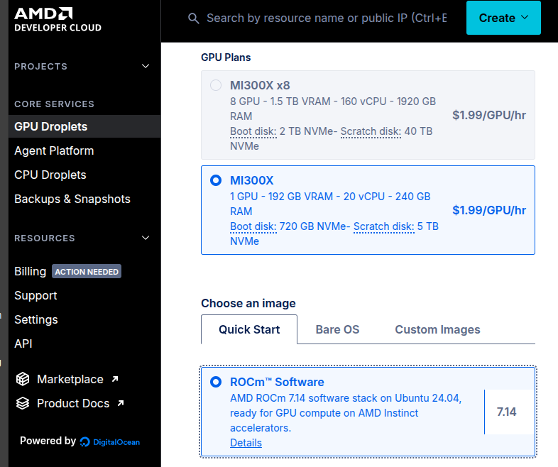

Renting a GPU to Understand LLM Inference
I wanted to understand what actually happens on the GPU, so I served a model myself instead of reading about it.

I wanted to actually understand how LLM inference works. What's happening on the GPU, not just the API call. So instead of reading more about it, I served a model myself.
It turns out AMD runs a developer program that hands out free cloud credits. That was enough to spin up a single MI300X with 192GB of VRAM on one card. I grabbed Qwen2.5-72B and ran it on my own GPU. It's open weights, so anyone can download it and do the same.
The timing felt right to run a Chinese open-weight model. They're having a serious moment. Qwen, DeepSeek, and Moonshot's Kimi K3 are all landing at or near frontier quality and shipping fully open, while a lot of the US labs are going the other direction and locking things behind APIs and safety guardrails. You hate to see it.
What I did
The setup itself is fairly boring in a good way: pick a GPU image that already has the ROCm drivers and vLLM installed, load the model, and vLLM exposes an OpenAI-compatible endpoint you can point any tool at. The interesting part wasn't the steps, it was watching what the machine actually does once the model is loaded.
A couple of notes from the deployment
The weights aren't the whole story. Loading Qwen-72B took about 145GB, and vLLM immediately grabbed most of the rest of the card for the KV cache, the running memory that holds the conversation as the model generates. Watching the startup log spell out "this much VRAM equals this many tokens of context" made the context-length-vs-memory tradeoff concrete in a way no diagram ever did. The weights are the floor; the context is what actually fills the card.
Tool-calling is two moving parts, not one. The model has been trained to emit the call, but your server has to be told how to parse that output into a structured tool call. Skip that config and the call comes back as plain text the agent can't see. It doesn't error. It just silently stalls. That one cost me some time, and it's the kind of thing you only really internalize by hitting it.
Why I bothered
I care about this because I'm building AI-driven security tooling at Vuln Scanners, and I'd been making architecture decisions about inference entirely from the outside. Which model, what it costs at scale, where the bottlenecks are. Those are hard calls to make well from behind an API key.
The whole AI stack feels like a black box until you rent the metal for an afternoon. Then it's just software you can read all the way down. If you're building on top of models and you've never served one yourself, the AMD Developer Cloud free credits are a cheap way to fix that. Cheapest tuition I've paid in a while.